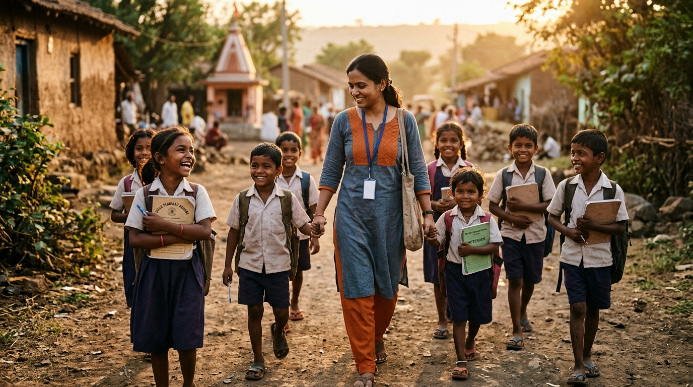
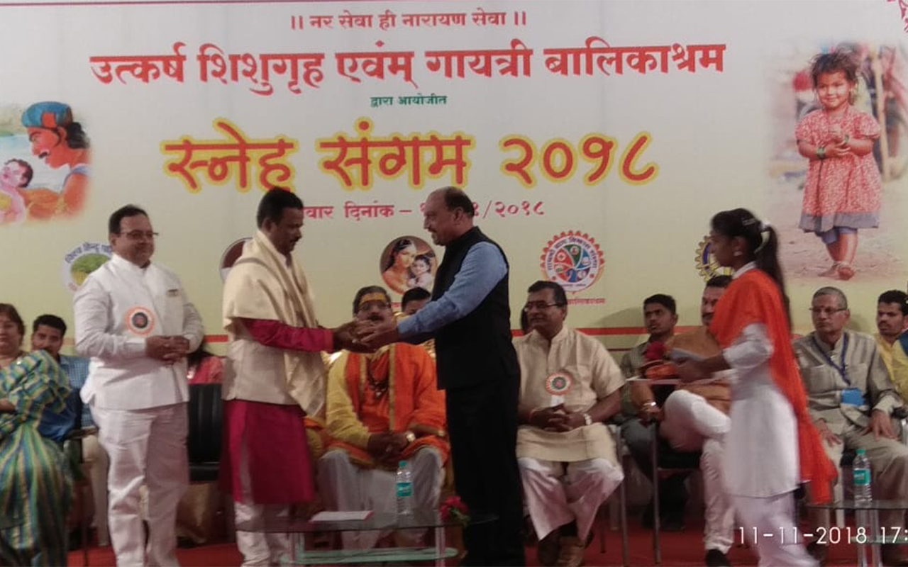
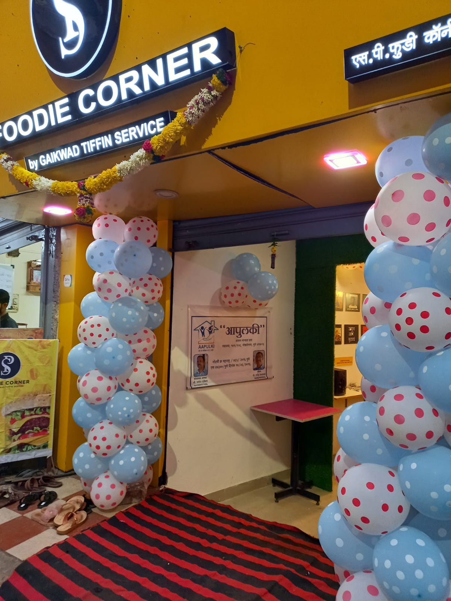

बदल शक्य आहे.
गरज तुमच्या "आपुलकी" ची.
कौटुंबिक व सामाजिक संकटांमुळे निराधार झालेल्या बालकांच्या पुनर्वसन, शिक्षण आणि स्वावलंबनासाठी समर्पित महाराष्ट्रातील एकमेव माजी सुधारगृह व बालकाश्रम विद्यार्थी प्रणित स्वयंसेवी चळवळ.
स्वानुभावातून उमटलेली कृतज्ञतेची चळवळ
इ.स. १९९५ मध्ये श्री. मनोज नारायण दांडेकर आणि श्री. राजेंद्र व्यंकटेश बेलवलकर या दोन ध्येयवादी तरुणांनी 'आपुलकी' ची स्थापना केली आणि तिचा विस्तार महाराष्ट्रभर नेला. २०१६ मध्ये या संस्थेची रीतसर अधिकृत शासकीय नोंदणी पूर्ण झाली.
या संस्थेचे वेगळेपण हेच की, संस्थेचे संस्थापक व सदस्य हे स्वतः एकेकाळी बालकाश्रम, बालसदन, बालगृह आणि सुधारगृहात वाढलेले विद्यार्थी आहेत. समाजात त्यांनी प्रामाणिकपणे व स्वकष्टाने स्वतःचे स्थान निर्माण केले.
आपुलकीच्या या सर्व सभासदांचे स्वानुभव पुढील पिढीला सोसावे लागू नयेत, यासाठी कृतज्ञतेपोटी ह्या वंचितांना स्वतःच्या पायावर उभे राहता यावे म्हणून आपुलकी अविरत कार्य करत आहे.
संवेदनशील समाजाची साथ
आपला समाज संवेदनशील व सहवेदना जाणणारा असून अत्यंत दातृत्वशील आहे. आपल्या सर्वांच्या निरलस प्रेमामुळे आणि आर्थिक सहाय्यामुळेच ही मुले समाजात सन्मानाने जगू शकत आहेत.
वंचितांना स्वावलंबी बनवणारे उपक्रम
प्रत्येक मुलाला सन्मानाने, सुरक्षेने आणि ज्ञानाने संपन्न आयुष्य जगता यावे यासाठी राबवले जाणारे प्रकल्प
शिक्षण व व्यावसायिक प्रशिक्षण
बालगृहातून बाहेर पडणाऱ्या १८ वर्षांवरील युवक-युवतींना उच्च शिक्षण, कौशल्य विकास, आणि नोकरीक्षम बनवण्यासाठी पाठबळ देणे.
- ✓ शाळा व महाविद्यालयीन फी सहाय्य
- ✓ व्यावसायिक तांत्रिक कोर्सेस
- ✓ करिअर मार्गदर्शन व समुपदेशन
पुनर्वसन व निवारा सहाय्य
कौटुंबिक आपत्ती किंवा अनाथावस्थेमुळे निराधार झालेल्या मुलांचे संगोपन, सुरक्षित निवारा आणि त्यांच्या हक्कांचे संरक्षण करणे.
- ✓ कायदेशीर व शासकीय प्रक्रियेत मदत
- ✓ आरोग्य तपासणी व औषधोपचार
- ✓ अन्नधान्य व कपड्यांची उपलब्धता
आपत्ती व्यवस्थापन व समाजकार्य
पूर, दुष्काळ किंवा नैसर्गिक संकटात सापडलेल्या दुर्गम गावांना थेट जाऊन अन्न, कपडे, निवारा साहित्य व उपजीविकेची साधने पुरवणे.
- ✓ पूरग्रस्त गावांना थेट आर्थिक व वस्तूरूप मदत
- ✓ रोजगार पुनर्स्थापना (उदा. शिलाई मशीन वाटप)
- ✓ वंचित संस्थांशी समन्वय व सहयोग

थेट ग्राउंड रिपोर्टकोकणातील दलवटणे गावाची आपुलकीने सावरलेली वाताहात
गेल्या वर्षी मुसळधार पावसाच्या पुराने कोकणातील चिपळूण मधील दलवटणे या ५० उंबरठे असलेल्या छोट्या गावाची संपूर्ण वाताहात झाली होती. संपर्क तुटल्यामुळे उपासमारीची वेळ आली होती.
अशा आणीबाणीच्या क्षणी 'आपुलकी' च्या कार्यकर्त्यांनी तिथे पोहोचून कपडे, किराणा व रोख रकमेची मदत दिली. ज्यांची शिलाई मशीन वाहून गेली होती त्यांना नवीन मशीन दिली, ज्यांची रिक्षा खराब झाली त्यांना दुरुस्तीसाठी थेट आर्थिक सहाय्य देऊन पुन्हा पायावर उभे केले.
संस्थेचे कार्यकारणी मंडळ
ज्यांनी स्वतः या वेदना अनुभवल्या, तेच आज संस्थेचे धुरा सांभाळत आहेत
तुमचे एक योगदान एका बालकाचे भविष्य घडवू शकते
आपल्या आर्थिक आणि वस्तुरूप सहाय्याची गरजू आणि वंचित वर्गाला नितांत आवश्यकता आहे. देणगीदारांना कायदेशीर पावती देण्यात येते. आपली छोटीशी मदतही या मुलांच्या जीवनात मोठा बदल घडवून आणू शकते.
अधिकृत बँक खाते तपशील (Bank Transfer / NEFT / IMPS)
Axis BankAAPULKI
Axis Bank – S.B. Road, Pune
922010015680374
UTIB0000315
* देणगी दिल्यानंतर देणगीची अधिकृत पावती मिळवण्यासाठी आपल्या व्यवहाराचा स्क्रीनशॉट किंवा ट्रान्झॅक्शन आयडी help.aapulki@gmail.com किंवा व्हॉट्सॲपवर पाठवावा.
QR कोड स्कॅन करून मदत करा
कोणत्याही UPI App द्वारे (GPay, PhonePe, Paytm)
आपुलकीचे सामाजिक कार्य क्षणचित्रे
प्रत्यक्ष फिल्डवर जाऊन केलेले मदतकार्य, मान्यवरांच्या भेटी आणि कौतुक क्षण

आपुलकीशी संपर्क साधा
आपल्या परिसरातील गरजू, निराधार बालकांविषयी माहिती देण्यासाठी किंवा प्रत्यक्ष भेट देऊन सहकार्य करण्यासाठी आमच्याशी संपर्क साधा.